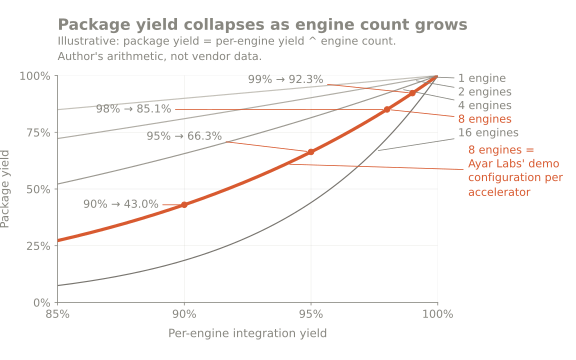

Ayar Labs, Lightmatter, Celestial AI and the real fight over optical I/O.
The wrong question
The conventional framing is modular versus native. On one side is a replaceable optical chiplet that sits beside the compute die. On the other is a photonic layer built into the package itself. It makes a clean diagram and a clean debate, and I think it's the wrong debate.
The right question is who carries the yield risk. A package that moves light in and out also contains the most expensive silicon a company will ever sell. Every optical component you add is another way to destroy that silicon's value before it ships. Architecture is just the order in which you choose to take that risk. Modular engines let you take it in small pieces you can test. A native photonic package asks you to take it all at once.
Seen that way, I don't find the 2026 evidence ambiguous. Modular wins the first volume wave. That isn't because it's more elegant. It's because it's the only version whose failure modes anyone can price.
Yield is the whole argument
Package yield is multiplicative. If a package carries eight optical engines and each survives integration with probability p, the package survives with probability p to the eighth power. This is my own arithmetic, not vendor data:
| Per-engine yield | Package yield (8 engines) |
|---|---|
| 99% | about 92% |
| 98% | about 85% |
| 95% | about 66% |
| 90% | about 43% |

Now add the asymmetry. If an engine fails after the fiber, laser path and substrate are bonded around it, you don't scrap a transceiver. You scrap an XPU. Siemens' packaging group makes the point that co-packaged assemblies are hard to rework, so a yield excursion at any step costs far more than it would with a pluggable module. They also note that silicon photonics still shows more process variability than mature CMOS, which is why known-good-die screening carries so much weight.
One anonymous expert, quoted in a November writeup on TSMC's COUPE flow, put combined wafer-to-engine yield at only 30 to 40 percent today. I wouldn't hang a thesis on one unnamed number, and I don't. I mention it because the direction matches what vendors say when they're being candid: this business lives or dies on test discipline.
Then there are the lasers, the part everyone worries about. They're sensitive to temperature, they drift, and their reliability suffers when they sit near hot silicon, which is why most co-packaged designs keep them external. A GlobalFoundries executive made the neat observation that "known good die" in this world largely means "known good lasers."
So the architecture that wins is the one that lets you screen and swap the risky parts before they're welded to the expensive part. That's a hard constraint, and it favors modularity.
Ayar Labs: the design that rations the risk
Ayar's pitch is the most disciplined in the field. TeraPHY, the optical engine, is a chiplet built for the packaging flows XPU vendors already run. SuperNova, the laser, lives outside the package in a standard pluggable form factor. The risky, hot, failure-prone component is a module you can replace, and the engine can be tested before it meets the compute die. That is yield thinking expressed as product design.
The money agrees. Ayar raised $500 million in March at a $3.75 billion valuation, and a $150 million extension in September brought its 2026 raise to $650 million. Nvidia and AMD are in the cap table. Its showpiece is a system with two accelerators, each carrying eight TeraPHY engines for more than 100 Tbps per accelerator. It won a demo award at TSMC's symposium this month and ran a live demo with GUC's ASIC and Wiwynn at OCP.
I'm still not convinced, and the reason is simple: a demo is not a deployment. An independent readiness review published in September found no named hyperscale deployment, and judged the company's "production-ready" language to be ahead of the outside evidence. Ayar reportedly shipped about 15,000 early units through December 2024, but there's no audited revenue and no disclosed yield from a volume line.
My bigger worry isn't the technology. It's position. Ayar sells a component into sockets that belong to other people: Nvidia, Broadcom, Marvell, and the custom-silicon teams inside hyperscalers. Having Nvidia and AMD as investors is a hedge and also a leash. If the dominant buyer decides to own its optical engine, a great chiplet becomes a very well-funded supplier waiting for a design win.
Lightmatter: great science, and a roadmap that tells on itself
Lightmatter made the boldest bet in the category. The Passage M1000 was pitched as a 114 Tbps active photonic interposer on a package spanning more than 4,000 mm², with 1.5 kW of power delivery. It was billed as arriving in summer 2025. The L200 and L200X, at 32 and 64 Tbps, were billed for 2026.
Lightmatter appears to be moving beyond the prototype stage. In October, its CEO said near-packaged optics had entered manufacturing, with five customer CPO designs taped out during the year. The company is also working with customers on two interposer designs, though those are still in development. There are reports of NPO shipments beginning in 2027, followed by high-volume CPO in 2028, but I haven't been able to verify those timelines independently. Nor have I found convincing evidence that the L200 is shipping at scale. For now, I'd treat these as indications of where things are heading, not proof that the products have reached volume deployment.
What interests me more is what Lightmatter has been building in the meantime. In March it launched vClick, a detachable fiber array unit whose stated purpose is to let manufacturers verify known-good optical engines before final integration with expensive ASIC dies. The company has also been pushing Guide, a laser engine with redundant lasers that can reroute around failures, and its CEO has said lasers are in short supply and that the shortage will take a couple of years of factory build-out to fix.
Look at that list. The company that made the case for native photonics is now investing in detachability, screening and laser supply, which are the tools that make modular architectures safe. My read is that Lightmatter is turning into a laser-and-engine company with an interposer option, and that this is the smartest thing it has done. It's the market's verdict on the interposer thesis, delivered through the roadmap of its own champion.
I don't think the interposer idea is wrong. Distributing I/O across the whole die instead of its edge is exactly what a shoreline-starved chip wants. But the idea is a call option on a packaging and test flow that nobody has shown at production volume, and call options expire.
Celestial AI and Marvell: the answer the brief didn't have
The setup treats this as a two-horse race, and I'd add a third horse that changes the race. Marvell closed its Celestial AI acquisition on 2 February, paying about $1.3 billion in cash and roughly 24.5 million shares up front, with more contingent on revenue milestones through fiscal 2029. The headline price was $3.25 billion and could reach $5.5 billion if sales targets are hit. Celestial's first-generation Photonic Fabric chiplet is rated at 16 Tbps and the second at 64 Tbps on the same number of optical channels.
The important part is what Marvell says it will do with it. Its CEO told investors in March that Marvell will ship scale-up CPO to one large customer next year, ramping toward the end of 2027, with the chiplet integrated into both the XPU and the switch. At its October investor day Marvell said scale-up optics runs at near-zero revenue today, with multi-hundred-million-dollar revenue starting next year. It also introduced "scale-in," meaning optical chiplets inside the package on microLED and microVCSEL light sources. It called that an immaterial, funded call option for now.
This is the shape of the answer I find most convincing. Marvell is not just an optics vendor. It designs custom XPUs for hyperscalers, so it sits at both ends of the link and in the room where the package gets drawn. The integration risk, the part that kills yield, is carried by one company that controls both sides. That's a third architecture, and it isn't "modular" or "native." Call it "owned."
My bet is that the first production deployment of package-level optical I/O at scale will look like this: optics and ASIC from one design relationship, shipping to one customer who tells nobody the numbers. The physics will be shared across all three approaches. What decides the winners will be who is in the room when the package is designed.
Where I think the boundary ends up
I think the boundary moves inward in stages, and I'd bet on the order.
Stage one, now through about 2028. Optical engines sit beside the compute die, lasers stay external, and fiber attach gets more detachable. This is where all the shipping product lives. It's also where Nvidia, the market's biggest buyer, shows up late. Analyst coverage of its roadmap puts CPO into NVLink with the Feynman generation in 2028. Until then it leans on copper and on optics outside the GPU package.
Stage two, scale-in. Optics move inside the package as die-to-die links. Marvell has already named this as its next frontier, which tells you the people with the budget see where it goes.
Stage three, native photonic packaging. Interposer-class integration becomes sensible once known-good-die screening, test sockets and fiber attach are boring. My guess, and it is only a guess, is that volume here doesn't arrive before 2029 or 2030.
I also want to keep copper in the story. One analyst quoted by Fierce argues that copper keeps an enduring role and that optics wins mainly in multi-rack scale-up and large-model inference. I agree with that. The honest forecast is a long overlap, not a clean replacement.
On the 10 Tb/s test
Your test asks for a production-qualified XPU platform with at least 10 Tb/s of package-level optical connectivity, plus published power-per-bit, thermal and packaging-yield evidence by 22 November 2027. I like the discipline. I think it measures the wrong half.
The bandwidth bar is already cleared on paper by every contender. Ayar demos more than 100 Tbps per accelerator, the L200 is rated at 32 Tbps, and Celestial's first-generation chiplet is 16 Tbps. Bandwidth was never the open question.
The open questions are "production-qualified" and "published." My prediction is that by the deadline at least one production shipment will be announced and none of the three disclosure requirements will be met. The likeliest candidate, Marvell's ramp at one hyperscaler customer, lands right at the end of the window and sits in a part of the industry where power-per-bit and yield are trade secrets. By the letter of the test, every architecture would then remain "unproven." I think that would say more about hyperscaler secrecy than about physics.
If you want the test to measure engineering instead of disclosure, I'd split it into tiers: customer-confirmed shipment, system-level pJ/bit that includes the laser and SerDes, and yield evidence, with conference papers and packaging-partner statements accepted as proxies for the last one.
What would prove me wrong
I'd change my mind if any of these happened:
- A photonic-interposer XPU reaches production at a named customer with yield and energy-per-bit numbers behind it.
- Modular engines hit a yield wall, and the Ayar or Marvell ramps slip well past 2028 for packaging reasons.
- Nvidia, or another buyer large enough to set the standard, chooses to build its own engine and bypasses the independent vendors entirely.
If the first happens, I was too early in dismissing the interposer. The second would mean I was wrong about modularity. The third would mean I was right about physics and wrong about who gets to benefit from it.
Caveats I owe you
Most of the numbers here are claims by the companies selling the product. One central yield figure comes from a single anonymous expert, and the Lightmatter timeline comes partly from a secondary summary. I had no access to non-public data, customer contracts or yield reports, and anyone who does will see more than I can. This is a read of public evidence, argued with some conviction, and I'd be glad to see it break.
The photonic boundary will sit wherever someone is willing to guarantee the yield. For the next two years, the people willing to do that are selling chiplets.
Sources
- Ayar Labs, TSMC symposium demo award (10 Nov 2026): https://ayarlabs.com/news/ayar-labs-wins-demo-of-the-year-award-at-2026-tsmc-north-america-technology-symposium
- The Register on Ayar's $500M raise: https://www.theregister.com/2026/03/03/ayar_labs_500m/
- Ayar's $150M extension: https://usemeritai.com/news/ayar-labs-150-million-series-e-extension
- Independent readiness review of Ayar TeraPHY: https://pragma.vision/observe/ayar-labs-teraphy-ucie-optical-chiplet
- Fierce Network interview with Lightmatter's CEO: https://www.fierce-network.com/cloud/lightmatter-laser-focused-cracking-ais-scale-code-optics
- Secondary guide to Lightmatter's product timeline: https://www.insidedeeptech.com/lightmatter-passage-photonic-interconnect-full-guide/
- Lightmatter vClick announcement: https://lightmatter.co/press-release/lightmatter-unveils-vclick-optics-industry-first-detachable-fiber-array-unit-for-cpo-advanced-packaging-and-high-volume-production/
- EE Times on the Passage M1000 and L200 launch: https://www.eetimes.com/lightmatter-unveils-3d-co-packaged-optics-for-256-tbps-in-one-package/
- Marvell 10-K on the Celestial AI close: https://www.sec.gov/Archives/edgar/data/1835632/000183563226000011/mrvl-20260131.htm
- Gazettabyte on the Celestial AI deal and chiplet specs: https://gazettabyte.com/marvell-bets-big-on-optical-i-o-with-3-25b-celestial-ai-deal/
- Marvell Q4 FY2026 earnings call transcript: https://www.fool.com/earnings/call-transcripts/2026/03/05/marvell-mrvl-q4-2026-earnings-call-transcript/
- Futurum on Marvell's investor day: https://futurumgroup.com/insights/marvell-investor-day-2026-targets-80b-fy-2031-revenue-with-custom-silicon-and-optics/
- Siemens on CPO packaging trends: https://blogs.sw.siemens.com/semiconductor-packaging/2026/02/05/five-key-trends-of-co-packaged-optics-cpo-in-2026/
- Expert-call writeup on CPO yield (single anonymous source): https://fundaai.substack.com/p/deep-whats-holding-back-co-packaged
- Semiconductor Engineering on CPO reliability and known-good die: https://semiengineering.com/co-packaged-optics-reaches-power-efficiency-tipping-point/
- NAND Research on Nvidia's CPO roadmap: https://nand-research.com/nvidia-is-rewiring-the-data-center-with-light/
- The Next Platform on Nvidia's roadmap: https://www.nextplatform.com/compute/2026/03/19/driving-down-the-ai-system-roadmap-with-nvidia/5210195